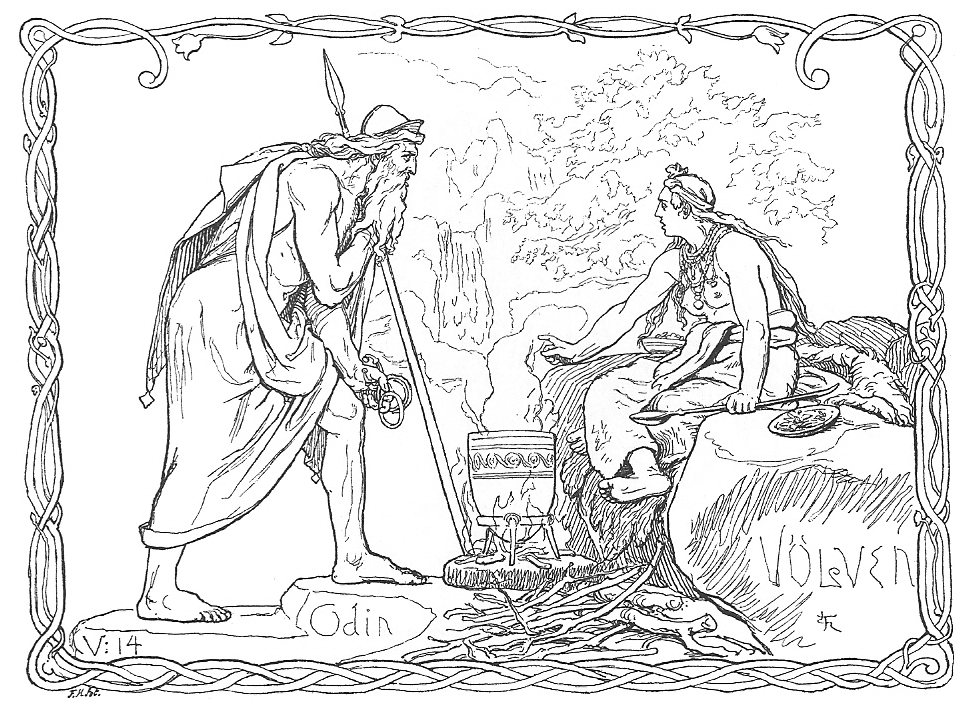

 Norse mythology is the body of myths of the North Germanic peoples, and is the northernmost extension of Germanic mythology, Norse mythology consists of tales of various deities, beings, and heroes derived from both before and after the pagan period, including medieval manuscripts, archaeological representations, and folk tradition.
The source texts mention numerous gods, such as the hammer-wielding, humanity-protecting thunder-god Thor, who relentlessly fights his foes; the one-eyed, raven-flanked god Odin, who craftily pursues knowledge throughout the worlds and bestowed among humanity the runic alphabet; the beautiful, seiðr-working, feathered cloak-clad goddess Freyja who rides to battle to choose among the slain; the vengeful, skiing goddess Skaði, who prefers the wolf howls of the winter mountains to the seashore; the powerful god Njörðr, who may calm both sea and fire and grant wealth and land; the god Freyr, whose weather and farming associations bring peace and pleasure to humanity; the goddess Iðunn, who keeps apples that grant eternal youthfulness; the mysterious god Heimdallr, who is born of nine mothers, can hear grass grow, has gold teeth, and possesses a resounding horn; the jötunn Loki, who brings tragedy to the gods by engineering the death of the goddess Frigg’s beautiful son Baldr; and numerous other deities.